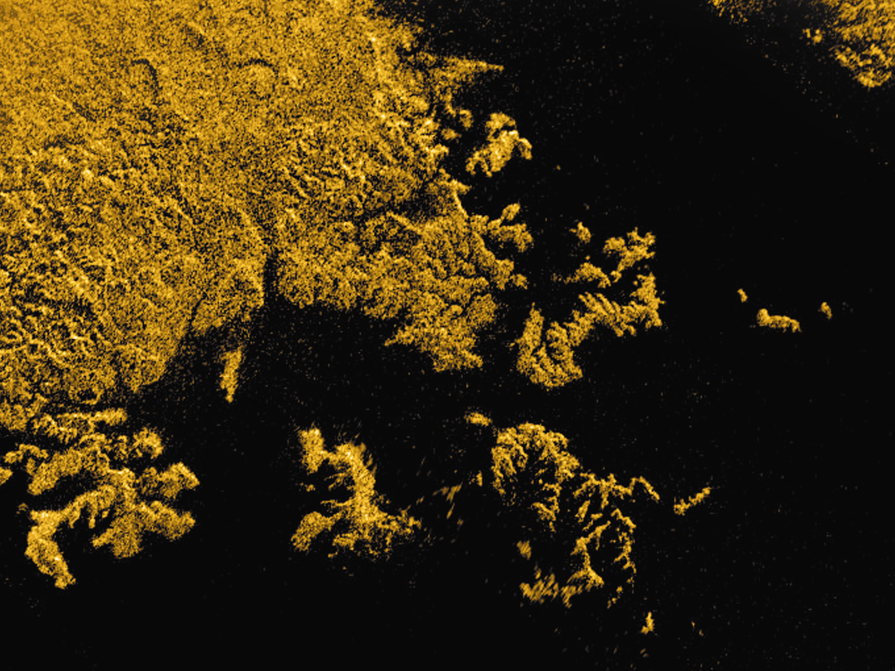
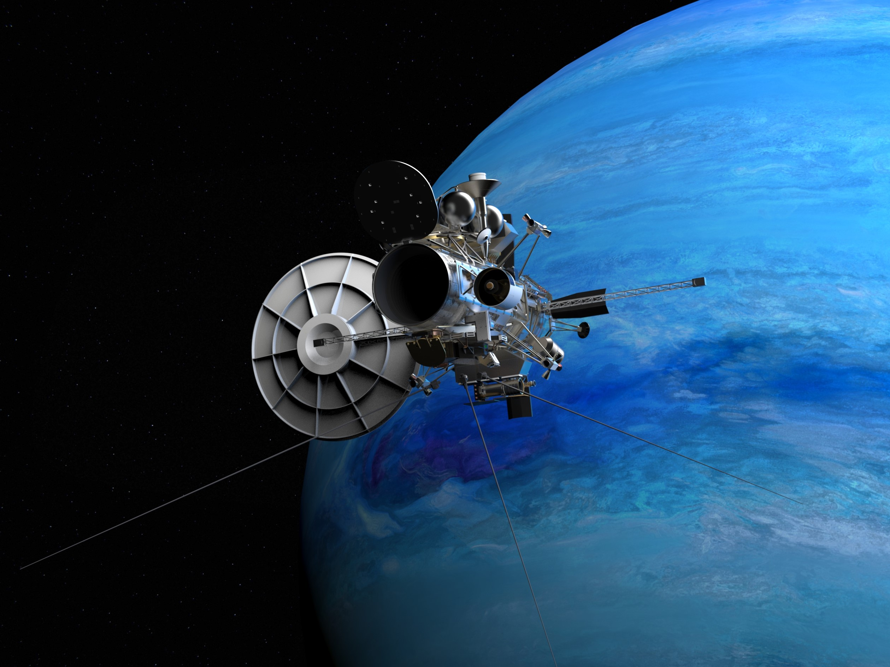

Space Mission Design

Astraeus
Mission to Saturn's moon Titan.
Started: January 2022

Started: April 2020
Arcanum
Mission to the Neptunian System
Started: April 2020

RUBIKS
The RUBIKS "Reconstruction of Undercrust Behaviour with Interconnected (K)cubeSats" mission proposal has the purpose to investigate mantle composition and dynamics - particularly mantle plume formation and their role in plate tectonics of the Earth. It is a joint mission for the magnetic field and gravity field.
Summer 2019